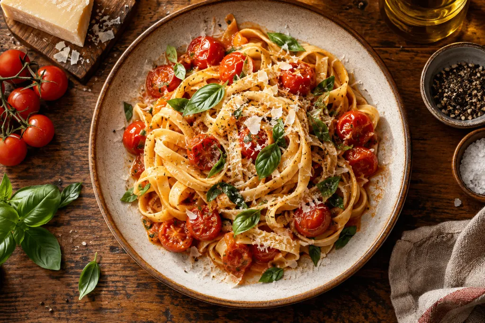

Massas da casa
Combinações de massas, molhos e ingredientes escolhidos pela cozinha.
Quero saber maisFEITO PARA COMPARTILHAR
Ingredientes, afeto e uma pausa para saborear o momento.
Site para Restaurante · Demonstração · personalize com a sua marca

SABORES DA CASA
Escolhas que traduzem o cuidado e a identidade da nossa marca.
Combinações de massas, molhos e ingredientes escolhidos pela cozinha.
Quero saber maisEntradas e porções para começar a conversa.
Quero saber maisSobremesas para encerrar o encontro com sabor.
Quero saber maisUMA PRÉVIA DO CARDÁPIO
Sugestões demonstrativas para explorar o visual do cardápio.
Cardápio ilustrativo. Consulte a equipe sobre ingredientes, restrições alimentares e disponibilidade.
NOSSA FORMA DE FAZER
Uma boa mesa reúne ingredientes, cuidado no preparo e vontade de receber. Da primeira conversa ao último sabor, cada detalhe participa do encontro.
DO INTERESSE AO ATENDIMENTO
Informe a data, o horário e o número de pessoas.
Pergunte sobre o cardápio e necessidades do grupo.
A equipe confirma disponibilidade e condições para receber você.
PARA SABER MAIS
Não. A equipe precisa confirmar disponibilidade e condições pelo canal de atendimento.
Sim. Inclua descrições, preços e informações de ingredientes reais.
Não há delivery integrado. Esse recurso pode ser avaliado em outro escopo.
VAMOS CONVERSAR
Para quantas pessoas e em qual data você gostaria de reservar?
Este é um modelo demonstrativo. O formulário prepara uma mensagem no seu dispositivo. Nenhuma informação é enviada e nenhum horário é confirmado.
Mensagem preparada para compartilhar.
DO MODELO AO SEU NEGÓCIO
Adaptação de cores, logotipo, textos e imagens fornecidos à estrutura escolhida; apresentação responsiva e caminhos de contato combinados na proposta.
Identidade visual, serviços, informações de atendimento e materiais com autorização de uso. Quantidade de páginas, conteúdo, revisões e prazo são definidos antes do início.
Domínio, hospedagem e manutenção. Agenda conectada, pagamentos, login, painel e integrações precisam de avaliação e orçamento específicos.
Esta página é uma demonstração ilustrativa. O site entregue terá o escopo aprovado no orçamento.
Solicitar orçamento deste modelo